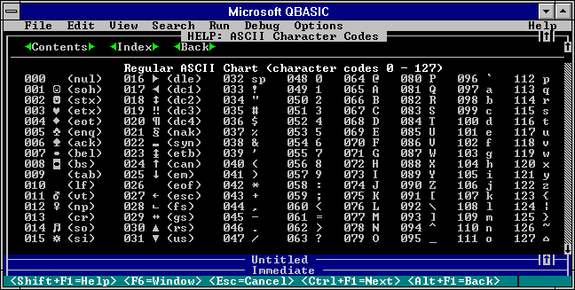
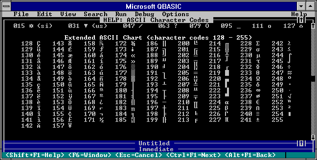

I originally posted this on AR15.com in the Urban Commandos forum. I've copied that original content here so that people can read it without tripping firewalls and other implements of censorship. I have revised the text since that time.
I've been looking over everyone's content on this topic and I've found it all to be lacking for one reason or another. So I'll post a complete overview here. What's especially been missing is historical perspective and why certain things exist the way they do.
Back in 1962, teletype was quite common. These systems worked by sending binary signals over a physical wire. So a machine on one end could send bits (binary digits) to another machine on the other end that could receive them. Well, if we group bits together, we basically have ourselves a base-2 numbering system. And because of this, we can represent arbitrary integer values. The more bits we assign to each value, the higher the maximum value we can represent.
In order for meaningful messages to be conveyed, a standardized encoding system had to be devised. Such schemes are called code pages. Their purpose is to map linguistic symbols (or parts of symbols) to numerical values called code points. Each symbol has its own code point and each code point is unique to that symbol.
For the purposes of teletype, a 7-bit system called ASCII was devised. It is shown below:

This is the system that the United States used for teletype and it became widely adopted as an industry standard.
Sometime in the 1970s, personal computers started to become a thing. And like teletype systems, they also needed to be able to represent linguistic symbols using binary code. Except computers are a bit different from teletype. Whereas teletype doesn't care about how many bits are assigned to a symbol, computers like to have everything be accessible in even powers two. ASCII was a logical choice for computers, but it was a 7-bit system. Seven is not a power of two, but eight is. Eight bits became commonly known as a byte. And each ASCII value was represented with a single byte, except the first bit was typically set to zero (since it wasn't needed).
Well, this gives us a whole extra bit to work with. Meaning, we have ASCII from 1962 with bit patterns of 0XXXXXXX (Basic ASCII), but we can also define a whole different code page with bit patterns of 1XXXXXXX (Extended ASCII).
The most common Extended ASCII code page that I remember is called CP437:

And so Basic ASCII code point values range from 0-127 while Extended ASCII ranges from 128-255.
The United States may have adopted CP437 as its Extended ASCII code page, but other regions of the world had little use for it. What they did have use for, however, was repurposing the Extended ASCII range to contain their own localized linguistic symbols.
Here's how computers in Greece interpreted things:
You can see that Basic ASCII is left in-tact, but that Extended ASCII has been replaced with their own local variant.
Well, here's the problem. All files really contain is bytes of data, and computers only know to display that data according to the code page they're configured for. Computers back then didn't know or care about which code page a file was really encoded in, they would simply display it as they knew how. Imagine opening a Russian file on a machine configured for Israel's code page. You'll see Hebrew, but it will be absolute gibberish. And for that matter, if you find a text file, how do you even know what code page it's encoded with?
Well this system of different, incompatible code pages may have been fine for data staying within a region, but it made international document exchange extremely tedious. What the industry wanted was a single code page that contained any linguistic symbol anyone could possibly want to show.
And so the industry created Unicode 1.0 and released it in October of 1991. Now pay attention to this next part because it's extremely important: The Unicode code page extended the original 7-bit ASCII code page. That means the code point values for English letters, numbers, and symbols all stayed the same between Basic ASCII and the new Unicode system. Therefore, any Unicode code points between 0 and 127 inherently refer to Basic ASCII characters. But that is where the similarities end.
Unicode 1.0 didn't address 256 unique values like the existing Extended ASCII schemes, it addressed 65,536 unique values. This was accomplished by using two bytes to encode each code point instead of one. And when it came to Basic ASCII (which only needed one byte), each one was preceded by a null byte. So while a single byte of 0x20 represents a space in Basic ASCII, two bytes of 0x00 and 0x20 are used to do so here. This encoding scheme was called UCS-2.
Now pay attention again, because this next part is also critically important: USC-2 could not safely pass through most text buffers at the time. Remember that UCS-2 encodes Basic ASCII values by prepending a null byte. Well, most text buffers assume a null byte to mark the end of the text sequence. ASCII sequences would have them deliberately inserted for this purpose only, but UCS-2 did it for every character in the English language. In other words, your English text would terminate before it even began.
Despite this glaring shortcoming, Windows NT, Mac OS, Java, and JavaScript all jumped on the UCS-2 bandwagon. Their text handling runtimes were renovated to internally use it. And this was fine for them because their buffers didn't terminate due to the presence of a single null byte (anymore).
But there was a problem: Almost nobody used Windows NT, Mac OS, Java, or JavaScript; so almost nobody could handle UCS-2. And given that MS-DOS, Windows 3.x, and Windows 9x couldn't even transport it because of the null byte issue, there was really no integration path forward for handling Unicode on these predominant systems.
And to top things off, people were realizing that a code page of 65,535 characters simply wasn't enough.
The Unicode Consortium went back to the drawing board. They had three major issues to solve:
The decision was ultimately made to decouple code point values from how they were stored in memory. In other words, the Unicode code page would still exist, but that code page wouldn't dictate how to convert code point values into bytes.
Two separate encodings were devised:
While simply tossing UCS-2 and redefining a more concise replacement would have been desired, it was ultimately infeasible. Microsoft had already begun moving internally to make all new versions of Windows based on NT. Meanwhile, Java and JavaScript had already begun to see an uptick in popularity. Unfortunately, UCS-2 was here to stay. But fortunately, there was an extension path forward.
Unicode 1.0 didn't define all 65,536 possible code points. It left a large chunk of them undefined for future use. Part of this available segment was taken and split into two different ranges called surrogates. One subrange was the high surrogate and the other was the low surrogate. A high surrogate and a low surrogate could then be combined to address many more unique code points. This scheme was called UTF-16, and Windows NT, Mac OS, Java, and JavaScript were all updated to understand this surrogate concept.
All UCS-2 that is within the Unicode 1.0 code page is inherently valid UTF-16. And UTF-16 can be safely stored by legacy UCS-2 systems so long as those systems do not truncate or cut text. This is because UCS-2 is not surrogate-aware and will happily separate a compound pair.
UTF-16 is the native encoding scheme for Unicode 2.0 and later, and Unicode's current limit of 1,112,064 unique code points stems from the number of unique values that UTF-16 can address with its basic (UCS-2) and surrogate pair systems combined.
And so getting the UCS-2 operating systems and runtimes extended to handle the larger Unicode 2.0+ code page was taken care of, but what about systems that couldn't handle null bytes?
Before I get into this, I have to say that UTF-8 is easily in the top five most ingenious things to ever happen in computer science. The engineer who created it did so on the back of a napkin in a cafeteria. He also deserves a Nobel Prize. I'll tell you why...
UTF-8 encodes all possible Unicode 2.0+ values using anywhere from one to four bytes. Now remember up above where I said that the Unicode code page extended the Basic ASCII code page? Well, UTF-8 encodes these values as single bytes. Not only that, but single bytes that are identical to their Basic ASCII counterparts. This means that UTF-8 that contains only Basic ASCII is itself Basic ASCII. And, any Basic ASCII text can be natively interpreted by UTF-8 as-is.
Anything outside of that Basic ASCII range requires two to four bytes. Here are the possible bit patterns that UTF-8 currently uses:
0XXXXXXX110XXXXX 10XXXXXX1110XXXX 10XXXXXX 10XXXXXX11110XXX 10XXXXXX 10XXXXXX 10XXXXXXThe X placeholders are where arbitrary bits for the code point value are stored. Any UTF-8 sequence whose byte starts with a zero bit is therefore Basic ASCII and is encoded as such. Code points outside of this range don't cause problems for legacy systems either, they are just interpreted as some Extended ASCII character from some arbitrary code page, which is fine.
Another useful aspect of UTF-8 is its self-synchronization feature. This makes it possible to skip to the middle of a UTF-8 byte stream and determine what role in a character the current byte plays.
For example:
0XXXXXXX: A complete Basic ASCII character.110XXXXX: The first byte of a two-byte character.1110XXXX: The first byte of a three-byte character.11110XXX: The first byte of a four-byte character.111110XX: The first byte of a five-byte character (not valid UTF-8).1111110X: The first byte of a six-byte character (not valid UTF-8).10XXXXXX: A continuation byte of a multi-byte character.11111110: Invalid byte.11111111: Invalid byte.Since the release of the Unicode 2.0 specification, other encodings have emerged to permit Unicode text to be used in certain niche scenarios. Of these, only UTF-32 is officially a part of the Unicode specification.
The different encodings are compared below. The column labeled "Extended" refers to how the scheme encodes characters outside of the original UCS-2 range.
| Name | Bytes | Extended | Common Uses |
|---|---|---|---|
| UTF-7 | 1-7 | Surrogate | Legacy email |
| UTF-8 | 1-4 | Direct | File exchange, network exchange, Linux file names |
| UTF-16 | 2, 4 | Surrogate | APIs: Win32, macOS, iOS, Qt |
| UTF-32 | 4 | Direct | ? |
| UTF-EBDIC | ? | ? | EBDIC mainframes |
| GB 18030 | 1, 2, 4 | Direct | Chinese government |